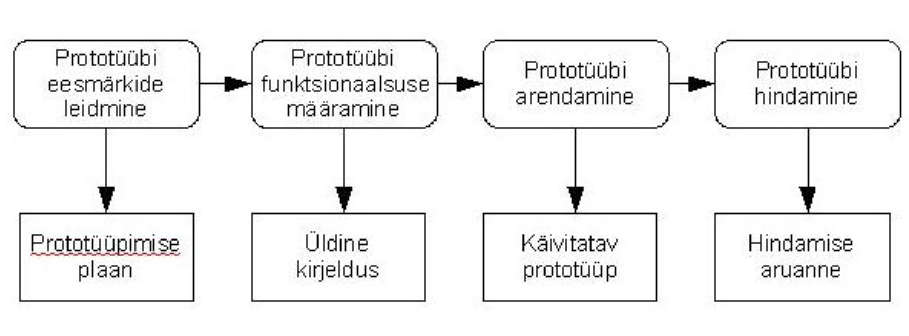

Prototüüp on süsteemi algne versioon, mida kasutatakse disaini võimaluste katsetamiseks ning ideede demonstreerimiseks. Prototüüpe saab kasutada erinevates arenduse faasides.
Nõuete kogumine - seda tehakse üldisemal tasemel ja samas ka fikseeritakse, mida on kindlasti vaja edaspidi täpsustama hakata.
Kiire kavandamine - keskendub nähtavale osale (sisend, väljund, vormid jms) ja selle tulemuseks on prototüüp. Klient hindab prototüüpi ja oskab selle alusel ka oma soove täpsustada.
Järgneb iteratsioon prototüübi parandamiseks, kuni see rahuldab kasutajat. Samal ajal saab arendaja uusi teadmisi kliendi soovide kohta.
Kiire tagasiside: Varajane kasutajate tagasiside aitab tuvastada nõrkusi ja parenduskohti enne toote lõplikku väljatöötamist.
Vähenenud riskid: Prototüüp võimaldab riske varakult maandada, vähendades ebaõnnestumise võimalusi ja kulusid hilisemates etappides.
Parem kommunikatsioon: Visualiseeritud prototüüp muudab arendusmeeskonna, sidusrühmade ja klientide vahelise suhtluse lihtsamaks ja arusaadavamaks.
Aeganõudev:Mitmete iteratsioonide tegemine ja korduv testimine võib võtta aega ja seeläbi pikendada arendustsüklit.
Keskendumine detailidele liiga vara: Prototüübi puhul võib tähelepanu koonduda konkreetsetele funktsioonidele või detailidele, jättes üldise lahenduse tähelepanuta.
Ebamäärane eelarve: Kuna prototüüpi tuleb pidevalt täiustada, võib see suurendada arenduskulusid ja raskendada eelarve planeerimist.
